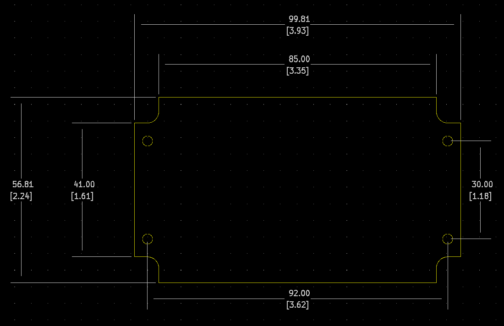

Project template containing the recommended board layout for Hammond Manufacturing RL6035:
Gray: RL6035 - HM1080-ND
Features:
- Designed to house P.C. boards for hand-held use.
- Molded in light grey or black general purpose ABS plastic with a light texture (material carries a UL flammability rating of UL94 HB).
- Two-part, snap action clam shell construction. Both halves include smooth recessed area for membrane, label or silkscreen.
- P.C. board standoffs are molded into both halves of the enclosure.
- P.C. board guides molded into top half.
- Designed to meet IP54.
- Includes four M3 assembly screws.
The "Dwgs.User" layer contains all critical dimmensions in milimeters[inches].
The "Edge.Cuts" layer contains the maximum board outline and holes to align with board standoffs.
PCB Preview:
